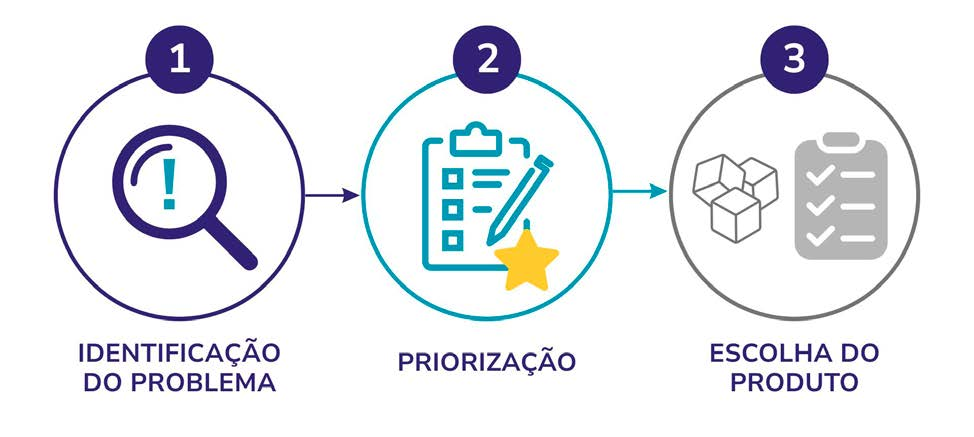
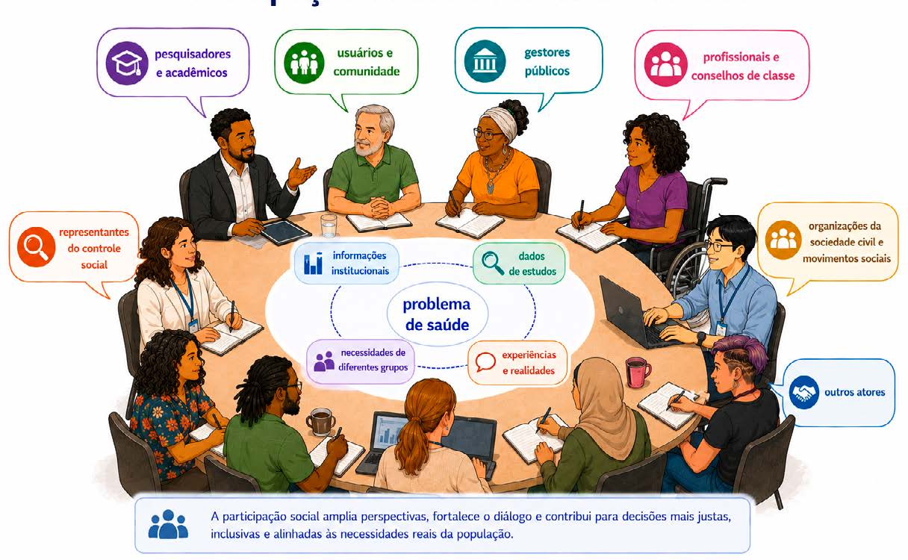
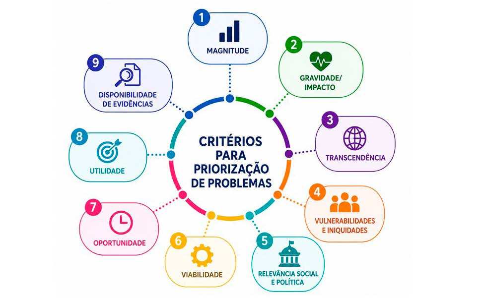

Módulo 2 | Aula 1
Identificação e priorização de problemas e tipos de produtos de evidências
O que é um problema prioritário
Identificação e priorização de problemas em Políticas Informadas por Evidências
Os problemas nas áreas sociais e de saúde podem ser complexos e multifatoriais, pois envolvem diferentes fatores sociais, econômicos, políticos, sanitários e culturais que interagem entre si. Muitas vezes, compreender completamente um problema exige analisar suas diversas causas, consequências e os contextos em que ele ocorre. Além disso, um problema pode ganhar visibilidade por diferentes motivos, como emergências em Saúde Pública, eventos críticos, criação de programas governamentais ou prioridades políticas institucionais (Brasil, 2020; Brasil, 2025a).
No contexto das Políticas Informadas por Evidências (PIE), a identificação adequada do problema é etapa fundamental do processo decisório, que envolve definir explicitamente o problema, compreender suas possíveis causas e analisar o contexto no qual a decisão será tomada. Também é importante identificar quais grupos populacionais são mais afetados (OPAS, 2022).
Enquanto o problema representa a situação que necessita de intervenção, as causas explicam por que ele ocorre, as consequências mostram seus impactos e as soluções correspondem às estratégias que podem ser utilizadas para enfrentá-lo (Brasil, 2025a).
No processo de identificação do problema, o envolvimento das partes interessadas também é relevante. Gestores, profissionais da saúde, pesquisadores, usuários dos serviços e outros atores sociais podem contribuir para ampliar a compreensão sobre o problema e sobre o contexto da tomada de decisão. A participação desses diferentes grupos pode ajudar na identificação de necessidades prioritárias e tornar o processo mais transparente e contextualizado (OPAS, 2022; Bortoli et al., 2017).
Figura 1 – Principais etapas para elaboração de produtos de evidências para apoio à tomada de decisão.

Fonte: Elaborada pelas autoras a partir de Brasil, 2025b; Brasil, 2019.
Definição de um problema prioritário
Definir um problema prioritário em Saúde Pública significa identificar questões de maior relevância sanitária, social, econômica ou política que demandam atenção dos gestores. Essa priorização depende tanto das características do problema quanto de sua inclusão na agenda pública e institucional (Brasil, 2025a).
A priorização de problemas pode ser influenciada por fatores como dados epidemiológicos, demandas da população, mídia, gestores, instâncias governamentais e evidências científicas, além de conflitos e interesses envolvidos no processo. Também é essencial considerar o contexto político, institucional e social, incluindo políticas existentes, organização dos serviços e viabilidade das intervenções (Bortoli et al., 2017; Brasil, 2025a).
Na diretriz metodológica: síntese de evidências para políticas (Brasil, 2025a) são citadas questões-chave que podem auxiliar você na definição e caracterização do problema prioritário. São elas:
- Como o problema se originou e como foi explicitado?
- Quais são as possíveis causas do problema?
- Quais são a magnitude e a relevância do problema?
- Quais as potenciais consequências do problema?
Outro aspecto importante é a “janela de oportunidade política”, que ocorre em condições favoráveis para discutir e implementar mudanças relacionadas a determinado problema. Essas oportunidades podem surgir em momentos de crise, mudanças de governo, mobilização social ou aumento da visibilidade pública sobre determinado tema (Brasil, 2025a).
Caracterização de um problema prioritário
Após identificar o problema, é preciso caracterizá-lo com base em evidências, considerando sua magnitude, relevância social, vulnerabilidades, iniquidades e impactos na população e nos serviços de saúde, justificando sua priorização (Brasil, 2025a; Brasil, 2021).
A magnitude de um problema em saúde é avaliada por sua dimensão na população, utilizando indicadores epidemiológicos, dados de vigilância, sistemas de informação e indicadores de morbidade e mortalidade, preferencialmente desagregados para identificar desigualdades e iniquidades (OPAS, 2022).
Os indicadores de saúde permitem analisar tendências e comparar problemas entre diferentes locais e períodos. Além dos dados epidemiológicos, também podem ser utilizados estudos sobre acesso, qualidade da assistência, custos, organização dos serviços e implementação de políticas públicas (Brasil, 2020; Brasil, 2025a).
Outro elemento importante é a identificação das populações mais afetadas pelo problema, considerando vulnerabilidades sociais, econômicas e territoriais. Crianças, adolescentes, idosos, populações marginalizadas e grupos socialmente vulnerabilizados podem apresentar maior exposição a riscos e maiores dificuldades de acesso às ações de cuidado e proteção em saúde (OPAS, 2022).
As pesquisas qualitativas também podem contribuir para a caracterização do problema, uma vez que permitem compreender percepções, experiências e necessidades de diferentes grupos. Essas pesquisas ajudam a ampliar o entendimento sobre os impactos do problema e sobre os fatores que influenciam sua persistência ou agravamento (Bortoli et al., 2017).
Por fim, informações confiáveis e informadas por evidências são essenciais para apoiar análises situacionais e subsidiar processos de tomada de decisão em saúde informados por evidências. O uso adequado de indicadores, sistemas de informação e evidências científicas fortalece a capacidade de gestores e equipes técnicas de compreender os problemas de saúde e planejar intervenções mais adequadas e contextualizadas (Brasil, 2020; Brasil, 2025a).
Convidamos você a assistir ao vídeo elaborado pelo Instituto Veredas e a Coalizão Brasileira pelas Evidências (2021): O que é PIE e como caracterizar um problema.
Participação social e atores envolvidos
Nas Políticas Informadas por Evidências, diferentes atores podem perceber um mesmo problema de formas distintas. Por isso, é importante envolver as partes interessadas desde a definição do problema até a elaboração e discussão dos produtos de evidências, garantindo um processo participativo e transparente (Brasil, 2020).
A participação social amplia a compreensão dos problemas, identifica necessidades prioritárias e fortalece a legitimidade das decisões, contribuindo para políticas e intervenções mais alinhadas às necessidades da população e dos serviços de saúde (Lavis et al., 2009a).
Atores sociais são pessoas, grupos ou organizações relacionados a um problema que contribuem com diferentes conhecimentos e perspectivas. Sua participação torna o processo de tomada de decisão mais participativo, contextualizado e representativo (Martins, 2011), além de fortalecer a democracia, a transparência e a responsabilidade pública (Lavis et al., 2009a). Entre os atores envolvidos na priorização de problemas e na tomada de decisão estão usuários dos serviços de saúde, familiares, profissionais, pesquisadores, gestores, organizações da sociedade civil e representantes de instituições nacionais e internacionais (Brasil, 2020; Lavis et al., 2009a).
Figura 2 – Participação social e atores envolvidos.
Clique nos balões de conversa para saber mais sobre cada ator.

Fonte da imagem: Os autores, a partir de ferramenta de IA ChatGPT, 2026.
A seleção dos atores sociais depende do tema, do nível da decisão e dos recursos disponíveis. Para apoiar esse processo, utiliza-se o mapeamento de atores, que identifica pessoas, grupos e instituições relacionados ao problema (Brasil, 2021).
Se houver dificuldades em identificar quais seriam os atores sociais que você pode convidar, pense que os atores sociais relevantes são aqueles que sofrem as consequências do problema; participam direta ou indiretamente de suas causas; atuam no seu enfrentamento; influenciam sua manutenção; ou produzem conhecimentos sobre o tema (Brasil, 2021).
Além de definir quem participará, é importante informar o papel de cada ator nas diferentes etapas das Políticas Informadas por Evidências, favorecendo engajamento, implementação das ações e tradução do conhecimento. Também é importante identificar e gerenciar possíveis conflitos de interesse entre os atores envolvidos, garantindo transparência e equilíbrio ao processo de tomada de decisão (Brasil, 2020).
Quer conhecer diferentes ferramentas para o mapeamento de atores sociais? Acesse as referências a seguir.
- Design thinking e design sprint: kit de ferramentas da Escola Nacional de Administração Pública (ENAP).
- Ferramentas para mapeamento das partes interessadas em programas de contracepção e planejamento familiar da Organização Mundial da Saúde (OMS).
- Ferramentas para mapeamento de partes interessadas do Instituto de Gestão de Riscos (IRM).
- Kit de ferramentas de mapeamento de partes interessadas no contexto de diálogos público-privados do Banco Mundial.
- Diretriz e kit de ferramentas para elaboração de planos de avaliação com a participação da Rede Europeia da Política Agrícola Comum (EU PAC).
- Kit de ferramentas de Design Thinking do Tribunal de Contas da União (TCU).
- Ferramenta que permite criar um “mapa de atores” que identifica as pessoas mais afetadas pelo problema.
Critérios de priorização de problemas
Após a identificação dos problemas e o mapeamento dos atores envolvidos, é necessário definir critérios que orientem a priorização. A utilização de critérios evidentes e previamente estabelecidos ajuda a organizar o processo de tomada de decisão e a aumentar a transparência das escolhas realizadas. Priorizar significa escolher quais problemas receberão maior atenção diante da limitação de tempo, recursos e capacidade operacional dos sistemas. Por isso, a definição de critérios serve para justificar por que determinados problemas foram considerados mais relevantes do que outros (Lavis et al., 2009b).
Fonte: Freepik (2026).
É importante que no processo de priorização os critérios sejam combinados para identificar os problemas que devem receber maior atenção, em um prazo menor de tempo. Não existem critérios mais relevantes ou mais importantes do que outros, e a combinação deles permite escolhas mais justas, efetivas e alinhadas às necessidades da população (Lavis et al. 2009a). Além dos critérios é fundamental que o processo siga princípios que o mantenham como uma proposta participativa, com inclusão de diferentes vozes e experiências, que seja transparente, garantindo que os critérios analisados e o processo estejam documentados, que considere questões de desigualdades e justiça social e que seja informado por evidências, tanto as científicas como as provenientes dos diferentes saberes (Lavis et al., 2009a; Brasil, 2020).
No contexto da Saúde Pública, critérios epidemiológicos são frequentemente utilizados. Aspectos como magnitude, gravidade, transcendência e vulnerabilidade ajudam a identificar problemas que causam maior impacto sobre a população. Critérios econômicos, como custos para o sistema de saúde, e critérios políticos, relacionados à governabilidade e à aceitação social das intervenções, também podem fazer parte da análise (Brasil, 2020; Brasil, 2025a). Outro aspecto importante é diferenciar urgência de importância. Nem sempre os problemas mais urgentes são os mais relevantes do ponto de vista epidemiológico ou social. Da mesma forma, alguns problemas altamente importantes podem não receber atenção imediata devido à ausência de pressão política ou visibilidade pública. Por isso, os processos de priorização devem buscar equilíbrio entre diferentes critérios e perspectivas (Brasil, 2025a). Você pode ver mais sobre esses critérios na Figura 3.
Figura 3 – Critérios para priorização de problemas.
Clique em cada critério para saber mais.

Fonte: Elaborada pelas autoras a partir de Brasil (2020); Brasil (2025); Lavis et al. (2009); Lavis et al. (2009b).
Como você verá a seguir, existem diversos métodos para realizar a priorização de problemas, mas, de acordo com a Diretriz metodológica interativa — síntese de evidências para políticas do Ministério da Saúde (Brasil, 2025a) —, é possível começar com algumas questões-chave:
- Qual problema afeta mais pessoas e de forma mais grave?
- Quais grupos estão em maior situação de vulnerabilidade?
- Quais impactos o problema gera para a saúde e para a sociedade?
- Existem condições reais para agir sobre esse problema nesse momento?
- É um tema relevante para a população e para os gestores?
- Há evidências disponíveis para apoiar as decisões?
Metodologias de priorização de problemas
Nas Políticas Informadas por Evidências, os problemas também podem ser identificados a partir de reuniões, consultas públicas, demandas institucionais, reivindicações sociais ou solicitações feitas por gestores e órgãos governamentais, como Secretarias Municipais e Estaduais (Brasil, 2020; Brasil, 2025a). É comum que a priorização esteja alinhada a documentos de gestão e a planejamento em saúde, como planos plurianuais, diretrizes do sistema de saúde, análises de situação de saúde, boletins epidemiológicos e compromissos nacionais e internacionais (Brasil, 2025a).
Diversas metodologias podem ser utilizadas para apoiar a priorização de problemas. Por exemplo, as ferramentas SUPPORT (Supporting Policy relevant Reviews and Trials) recomendam que os processos de priorização de problemas na área da saúde considerem aspectos relacionados à utilidade, viabilidade e oportunidade, abordados em formato de perguntas disparadoras (Lavis et al., 2009a). O Knowledge to Policy Center (K2P) propôs um conjunto de perguntas que ajudam a identificar quais problemas possuem maior potencial de produzir impactos positivos quando enfrentados com o uso de evidências científicas (WHO, 2020).
Já a SPARK (Center for Systematic Reviews on Health Policy and Systems Research), desenvolvida inicialmente para priorização de perguntas de pesquisa para revisões sistemáticas, considera tanto a perspectiva de formuladores de políticas quanto a viabilidade metodológica das perguntas propostas (OMS, 2012; Langlois; Daniels; Akl et al. 2018).
Na tabela a seguir você poderá conhecer mais algumas delas.
Tabela 1 – Metodologias de priorização de problemas.
| Metodologia | Como funciona |
|---|---|
| Matriz Combinada | Considera critérios como magnitude, gravidade, transcendência e insuficiência de conhecimento sobre o problema. Após a atribuição de pontuações para cada critério, os problemas com maiores escores podem ser considerados prioritários (Brasil, 2006; Brasil, 2020; Brasil, 2025a). |
| Hanlon | Considera critérios relacionados à magnitude e severidade do problema, eficácia da solução e exequibilidade da intervenção proposta, sendo este último classificado pelo PEARL — pertinência, exequibilidade econômica, aceitação, recursos e legalidade (Souza et al. 2017; Brasil, 2020). |
| Matriz GUT | Considera a gravidade dos impactos causados, a urgência para intervenção e a tendência de agravamento do problema ao longo do tempo. Na matriz GUT, cada problema recebe pontuações para esses três componentes e, em seguida, as notas são multiplicadas (G × U × T) (Brasil, 2025a). |
| Delphi | Técnica de consenso baseada em consultas sucessivas a especialistas, realizadas de forma estruturada e geralmente anônima, com o objetivo de priorizar problemas, agendas de pesquisa, temas ou estratégias e apoiar a tomada de decisão (Bryant et al., 2014; Yonekura et al., 2020). |
Fonte: Elaborada pelas autoras a partir de Brasil (2006); Brasil (2020); Brasil (2025a); Souza et al. (2017); Bryant, Sanson-Fisher, Walsh, Stewart (2014); Yonekura et al. (2020).
Além dos métodos destacados na tabela, também podem ser utilizadas no processo alguns princípios das ferramentas do planejamento em saúde, como a matriz RUF-V (Relevância, Urgência, Factibilidade e Viabilidade), a matriz MTV/C (Magnitude, Transcendência, Vulnerabilidade e Custos) e a matriz SWOT (Strengths – forças, Weaknesses – fraquezas, Opportunities – oportunidades) e Threats – ameaças). Essas três ferramentas, apesar de não terem foco específico, podem ser utilizadas em processos de priorização de problemas, mas você vai ver seu uso mais frequente na análise de fatores que podem promover a implementação de políticas e intervenções (Brasil, 2020; Brasil, 2025a).
Independentemente da metodologia escolhida para a priorização de problemas, é importante que os critérios utilizados sejam transparentes, contextualizados e discutidos coletivamente com os atores envolvidos. Além disso, devem buscar reduzir vieses e favorecer decisões mais equitativas, fundamentadas em evidências científicas e nas necessidades da população (Lavis et al., 2009a; Brasil, 2020).